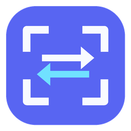

ابدأ التحديد
اضغط الزر العائم أو أيقونة شريط النظام أو الاختصار Ctrl + Shift + T.

مترجم الشاشةScreen Translatorبرنامج ترجمة الشاشة يعمل في الخلفية: حدّد أي نص من لعبة أو متصفح أو برنامج، ليقرأه OCR ويعرض ترجمته العربية فورًا.
تحميل مترجم الشاشةابدأ بخطوة واحدة، وستصبح الطريق أوضح.
يقدّم مترجم الشاشة للكمبيوتر طريقة عملية لفهم النصوص التي لا يمكن نسخها بالطريقة المعتادة. بدل كتابة الجملة يدويًا أو التقاط صورة ثم فتح موقع آخر، يمكنك استدعاء أداة التحديد فوق النافذة الحالية، وسحب إطار حول النص، ثم قراءة الترجمة العربية في نافذة صغيرة. تناسب هذه الطريقة الحوارات داخل الألعاب، وأزرار القوائم، ورسائل المهام، وصفحات المتصفح، والمستندات، وواجهات البرامج التي تعرض نصًا بلغة أجنبية.
تبدأ عملية ترجمة النص من الشاشة بالتقاط المنطقة التي يختارها المستخدم في الذاكرة فقط. بعد ذلك يستخدم البرنامج تقنية التعرّف الضوئي على الحروف OCR لاستخراج الكلمات من الصورة محليًا، ثم يرسل النص المستخرج وحده إلى خدمة الترجمة لإنتاج نتيجة عربية. لا تُحفظ صورة الشاشة على القرص ولا تُرفع إلى الإنترنت، ويمكن نسخ الترجمة أو إعادة التحديد مباشرة من نافذة النتيجة.
إذا كنت تبحث عن مترجم ألعاب عربي، فالأداة مصممة لتبقى جاهزة في الخلفية دون الحاجة إلى التنقل المستمر بين النوافذ. يمكنك بدء التحديد من الزر العائم، أو أيقونة شريط النظام، أو الاختصار Ctrl + Shift + T. هذا يجعل ترجمة الألعاب إلى العربية أسرع أثناء اللعب، خصوصًا في ألعاب القصة وتقمص الأدوار التي تحتوي على حوارات ووصف طويل للعناصر والمهام.
يعمل برنامج ترجمة الشاشة أيضًا مع المتصفحات وبرامج Windows اليومية. تستطيع تحديد عبارة من فيديو، أو رسالة داخل تطبيق، أو جزء من واجهة لا يسمح بالنسخ. يدعم الإصدار الأول التعرف على الإنجليزية والفرنسية والألمانية والإسبانية والعربية، ويعرض النتيجة باللغة العربية ضمن تصميم داكن ومدمج لا يغطي مساحة كبيرة من الشاشة.
البرنامج مخصص لنظامي Windows 10 وWindows 11 بنواة 64-bit، وهو مجاني بلا إعلانات أو اشتراك أو تسجيل دخول. يحتاج OCR إلى موارد محلية مثبتة مع التطبيق، بينما تحتاج الترجمة إلى اتصال بالإنترنت. قد تختلف دقة القراءة بحسب وضوح الخط وحجمه وتباينه، لذلك يؤدي تحديد النص بدقة واستخدام وضع النافذة بلا حدود في الألعاب إلى نتيجة أفضل، خاصة عندما تمنع بعض أوضاع ملء الشاشة الحصرية ظهور أدوات التحديد العائمة.
اضغط الزر العائم أو أيقونة شريط النظام أو الاختصار Ctrl + Shift + T.
اسحب إطار التحديد فوق الكلمة أو الجملة التي تريد ترجمتها.
تظهر الترجمة العربية في نافذة صغيرة، جاهزة للنسخ أو لإعادة التحديد.
زر عائم، وأيقونة في شريط النظام، واختصار لوحة مفاتيح يعمل من أي مكان.
تتم معالجة صورة المنطقة المحددة محليًا ولا تُرفع لقطة الشاشة إلى الإنترنت.
تصميم داكن ومدمج مع دعم كامل لاتجاه الكتابة من اليمين إلى اليسار.
دعم مبدئي للإنجليزية والفرنسية والألمانية والإسبانية والعربية.
الإصدار الحالي غير موقّع رقميًا، لذلك قد يعرض Windows تحذير SmartScreen عند التشغيل الأول. تأكد من أن اسم الملف هو ScreenTranslate-1.0.0-Setup.exe وأنه حُمّل من إصدار GitHub الرسمي.
لا يحفظ مترجم الشاشة صور المناطق المحددة على القرص ولا يرفعها إلى الإنترنت. يجري التعرّف الضوئي على الحروف محليًا داخل جهازك.
بعد استخراج النص، قد يُرسل النص وحده إلى خدمة الترجمة لإنتاج الترجمة العربية. لا يجمع التطبيق بيانات استخدام، ولا يتطلب حسابًا، ولا يعرض إعلانات.
شغّل مترجم الشاشة واضغط Ctrl + Shift + T أو الزر العائم، ثم اسحب إطار التحديد فوق النص داخل اللعبة. يقرأ البرنامج النص عبر OCR ويعرض ترجمته العربية في نافذة صغيرة.
يعمل مع معظم الألعاب التي تسمح بعرض أداة التحديد فوقها. قد تمنع بعض الألعاب ذات وضع ملء الشاشة الحصري أو أنظمة الحماية النوافذ العائمة؛ عندها يساعد استخدام وضع النافذة بلا حدود.
نعم، مترجم الشاشة مجاني، بلا إعلانات أو اشتراكات أو تسجيل دخول.
يعمل OCR محليًا على جهازك، لكن إرسال النص المستخرج إلى خدمة الترجمة يحتاج اتصالًا بالإنترنت في الإصدار 1.0.0.
لا. تُلتقط المنطقة المحددة في الذاكرة لمعالجتها محليًا ولا تُحفظ الصورة على القرص أو تُرفع إلى الإنترنت.
نعم، الإصدار الحالي مخصص لأجهزة Windows 10 وWindows 11 بنواة 64-bit.